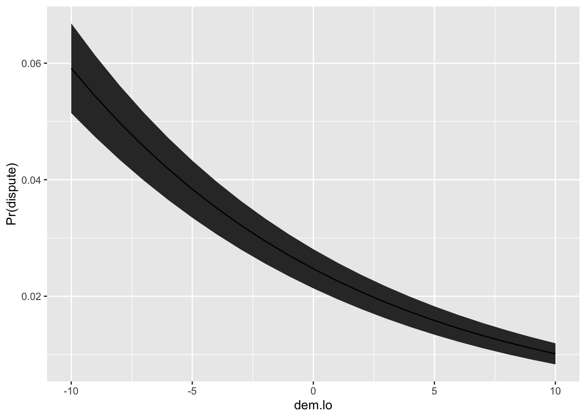

# load Clark and Golder's data
cg <- crdata::cg2006 # from my data packageWeek 4 Exercises
Instructor and TA copy: complete solutions, always open
Complete solutions are available. Work each exercise before you open one.
Note: These exercises are tending toward “tedious” and “rote.” However, I want to make sure that we understand the implementation of the basic framework, so there’s a lot of tedious repetition in this homework.
Exercise 1 Berk (2010)
- Berk distinguishes Level I (descriptive), Level II (statistical inference), and Level III (causal inference) regression analyses. Summarize the features of each level in your own words. Explain why Berk argues that most regressions in criminology are Level I. Does his claim about criminology apply to political science as well?
- Select a recent empirical article in your subfield that uses non-experimental (i.e., observational) data. Identify how the authors use regression. At what level does the authors claim to operate? Use direct quotes if possible. At what level does the analysis actually operate? Explain.
- Berk critiques observational regression treated as causal. He also lists common responses (e.g., “the assumptions are reasonable,” “we all have models,” “you have to make assumptions to make progress”). Pick one response and assess whether you find it persuasive. Defend your position. How might you design a study in your area that could move from Level I or II toward Level III without weak rhetorical defenses? Perhaps give an example.
- Berk concludes that, with rare exceptions, regression analyses of observational data should be treated as Level I. Do you agree? If you take Berk’s view seriously, what happens to publication standards, peer review, funding, and training?
Complete solution
No solution intended.
Exercise 2 Clark and Golder (2006), normal distribution
Clark and Golder (2006) fit the following regression model (that we’ve seen several times now).

- Use an R formula and
model.matrix()to create the required design matrixX. Think carefully about the formula needed. - Reproduce their estimates with the matrix multiplication \((X^\top X)^{-1} X^\top y\) or
solve(t(X) %*% X) %*% t(X) %*% y. - Reproduce their estimates using a normal linear model with
optim(). You can easily adapt code likeest_logit()from the notes, remembering that you must combine all parameters (i.e., the vector \(\beta\) and scalar \(\sigma\)) into a single vector \(\theta\) to giveoptim(). See the template below.
normal_ll <- function(par, y, X) {
beta <- par[1:ncol(X)] # pull out the vector of betas
sigma <- par[ncol(X) + 1] # pull out the scalar sigma
... [and so on]
}The least squares and ML estimates of the coefficients should match; for the normal linear model, the ML estimate is just the least squares solution.
Complete solution
Solution
# load data
cg <- crdata::cg2006
glimpse(cg)Rows: 487
Columns: 8
$ country <chr> "Argentina", "Argentina", "Argentina", "Argentina", …
$ year <dbl> 1946, 1951, 1954, 1958, 1960, 1963, 1965, 1973, 1983…
$ average_magnitude <dbl> 10.53, 10.53, 4.56, 8.13, 4.17, 8.35, 4.17, 10.13, 1…
$ eneg <dbl> 1.342102, 1.342102, 1.342102, 1.342102, 1.342102, 1.…
$ enep <dbl> 5.750, 1.970, 1.930, 2.885, 5.485, 5.980, 5.155, 3.1…
$ upper_tier <dbl> 0, 0, 0, 0, 0, 0, 0, 0, 0, 0, 0, 0, 0, 0, 0, 0, 0, 0…
$ en_pres <dbl> 2.09, 1.96, 1.96, 2.65, 2.65, 3.90, 3.90, 2.66, 2.30…
$ proximity <dbl> 1.00, 1.00, 0.20, 1.00, 0.20, 1.00, 0.33, 1.00, 1.00…# create design matrix
f <- enep ~ eneg*log(average_magnitude) + eneg*upper_tier + en_pres*proximity
mf <- model.frame(f, data = cg)
X <- model.matrix(f, data = mf)
y <- model.response(mf)
# OLS
solve(t(X) %*% X) %*% t(X) %*% y [,1]
(Intercept) 2.91570805
eneg 0.11160359
log(average_magnitude) 0.07798753
upper_tier -0.05655491
en_pres 0.26384754
proximity -3.09756561
eneg:log(average_magnitude) 0.26366122
eneg:upper_tier 0.05919037
en_pres:proximity 0.68317107# MLE via optim (normal-errors)
normal_ll <- function(theta, y, X){
k <- ncol(X)
beta <- theta[1:k]
sigma <- theta[k+1]
mu <- X%*%beta
sum(dnorm(y, mu, sigma, log = TRUE))
}
# use optim()
theta_start <- c(rep(0, ncol(X)), 2)
est <- optim(
par = theta_start,
fn = normal_ll,
y = y,
X = X,
method = "BFGS",
control = list(fnscale = -1)
)Warning in dnorm(y, mu, sigma, log = TRUE): NaNs produced
Warning in dnorm(y, mu, sigma, log = TRUE): NaNs produced
Warning in dnorm(y, mu, sigma, log = TRUE): NaNs produced
Warning in dnorm(y, mu, sigma, log = TRUE): NaNs produced
Warning in dnorm(y, mu, sigma, log = TRUE): NaNs produced
Warning in dnorm(y, mu, sigma, log = TRUE): NaNs produced
Warning in dnorm(y, mu, sigma, log = TRUE): NaNs produced
Warning in dnorm(y, mu, sigma, log = TRUE): NaNs produced
Warning in dnorm(y, mu, sigma, log = TRUE): NaNs produced
Warning in dnorm(y, mu, sigma, log = TRUE): NaNs produced
Warning in dnorm(y, mu, sigma, log = TRUE): NaNs produced
Warning in dnorm(y, mu, sigma, log = TRUE): NaNs produced
Warning in dnorm(y, mu, sigma, log = TRUE): NaNs producedest$par # matches ols from above [1] 2.91570243 0.11161188 0.07798356 -0.05655386 0.26384097 -3.09755108
[7] 0.26366069 0.05918970 0.68317320 1.31999212Exercise 3 Long (1997) or King (1998)
Read either King (1998) pp. 97-115 (section 5 through 5.3) OR Long (1997) pp. 34-84 (chapter 3). Write a short comparison to our notes on the logit model. Highlight the differences you find most interesting or important.
Readings are here.
Hint: You might notice differences in their (i) notation, (ii) justifications for the link function, (iii) recommended quantities of interest, or (iv) treatment of the LPM (foil vs. viable approximation). Pick a couple of these contrasts (or others you discover). Explain each clearly in your own terms. Keep it concise and focused; perhaps 300 words or so.
Complete solution
No solution intended.
Exercise 4 Probit
The probit model uses the cdf of the normal distribution (e.g., often denoted as \(\Phi(\cdot)\); pnorm() in R) rather than the inverse logit.
- Adapt the code from the notes to fit a probit model (or see this Gist). Use the same
ZeligData::turnoutdata and model specificationvote ~ age + educate + income + race. - Compare your probit coefficients to the logit coefficients from the notes. Notice that multiplying probit coefficients by 1.6 gives you roughly the logit coefficients.
- Adapt the code to compute the first difference and 90% confidence interval. Compare to the first difference and 90% confidence interval from the notes.
Complete solution
# load packages
library(tidyverse)
library(numDeriv)
# bernoulli log-likelihood with probit inverse link
probit_ll <- function(beta, y, X) {
p <- pnorm(X %*% beta) # Φ(η)
sum(dbinom(y, size = 1, prob = p, log = TRUE))
}
# function to fit model
est_probit <- function(f, data) {
mf <- model.frame(f, data = data)
X <- model.matrix(f, data = mf)
y <- model.response(mf)
beta_start <- rep(0, ncol(X))
est <- optim(
par = beta_start,
fn = probit_ll,
y = y,
X = X,
hessian = TRUE,
method = "BFGS",
control = list(fnscale = -1)
)
if (est$convergence != 0) warning("Probit model did not converge.")
list(beta_hat = est$par, var_hat = solve(-est$hessian))
}
# formula and data
turnout <- ZeligData::turnout
f <- vote ~ age + educate + income + race
# fit model
fit_probit <- est_probit(f, data = turnout)
# compare probit coefficients to logit coefficients from notes
fit_probit$beta_hat[1] -1.76361803 0.01652753 0.10425348 0.09632643 0.16270805fit_probit$beta_hat*1.6 # similar to logit[1] -2.82178884 0.02644405 0.16680557 0.15412229 0.26033288# build chosen covariate rows
X_lo <- cbind(
"constant" = 1,
"age" = quantile(turnout$age, probs = 0.25),
"educate" = median(turnout$educate),
"income" = median(turnout$income),
"white" = 1
)
X_hi <- X_lo
X_hi[, "age"] <- quantile(turnout$age, probs = 0.75)
# first difference (for probit)
fd_fn_probit <- function(beta, hi, lo) {
pnorm(hi %*% beta) - pnorm(lo %*% beta)
}
# first difference and se
fd_hat_probit <- fd_fn_probit(fit_probit$beta_hat, X_hi, X_lo)
grad_probit <- grad(
func = fd_fn_probit,
x = fit_probit$beta_hat,
hi = X_hi,
lo = X_lo
)
se_fd_hat_probit <- sqrt(grad_probit %*% fit_probit$var_hat %*% grad_probit)
# estimate
fd_hat_probit [,1]
25% 0.1421895# 90% ci
fd_hat_probit - 1.64 * se_fd_hat_probit # lower [,1]
25% 0.1141743fd_hat_probit + 1.64 * se_fd_hat_probit # upper [,1]
25% 0.1702048Exercise 5 Russett and Oneal (2001)
This exercise uses data from Russett and Oneal (2001). The model the probability of a dispute in a dyad-year as a function of several predictors. A quick summary of their book is here. For our purposes, we’ll focus on dem.lo, which is the lower of the two Polity scores in the dyad. For more details on the variables, see ?crdata::ro2001 or Table 1 on p. 277 of Oneal and Russet (1997).
# load russett and oneal data from {crdata}
ro <- crdata::ro2001Fit the logit model dispute ~ allies + lcaprat2 + contiguity + dem.lo + logdstab + power.
# reproduce their simplest logistic regression model p. 314, table A3.1
f <- dispute ~ allies + lcaprat2 +
contiguity + dem.lo + logdstab + power
fit <- glm(f, family = "binomial", data = ro)
# extract coefficient estimates
beta_hat <- coef(fit)
# extract covariance estimates
v_hat <- vcov(fit)We can make a summary of coefficient estimates with modelsummary(), but it isn’t very informative about the quantity of interest. We want to know how the probability of a dispute is changing!
library(modelsummary)
modelsummary(fit, stars = TRUE, gof_map = NA)Profiled confidence intervals may take longer time to compute.
Use `ci_method="wald"` for faster computation of CIs.| (1) | |
|---|---|
| + p < 0.1, * p < 0.05, ** p < 0.01, *** p < 0.001 | |
| (Intercept) | -0.468* |
| (0.186) | |
| alliesNot Allies | 0.694*** |
| (0.063) | |
| lcaprat2 | -0.264*** |
| (0.019) | |
| contiguityNoncontiguous | -0.980*** |
| (0.073) | |
| dem.lo | -0.091*** |
| (0.005) | |
| logdstab | -0.306*** |
| (0.026) | |
| powerMinor Powers | -0.467*** |
| (0.070) | |
Use beta_hat and v_hat from above with the invariance property and the delta method (via numDeriv::grad() and for loops) to compute the following quantities of interest and their 90% confidence interval.
- Plot the estimated probability (i.e., expected value) of a dispute as
dem.lovaries from -10 to 10 (in small steps, of maybe one unit or 0.1 units). Fix all other numeric variables at their medians andalliesNot Allies,contiguityNoncontiguous, andpowerMinor Powersat 0. Interpret. Compare the information in this plot to the information in the table above. (Aside: How can these probabilities vary nonlinearly if thedem.lovariable is included in the linear predictor linearly?) - What is the change in the probability of a dispute (i.e., “first difference”; \(\hat{\pi}_{max} - \hat{\pi}_{min}\)) when
dem.lochanges from its minimum to its maximum, fixing the other variables at the values described above? Notice that you can “kinda see” this value in the plot, but computing it directly gives you the exact value and the SE. The SE cannot be inferred from the plot.1
Complete solution
Solution
# load packages
library(tidyverse)
# load data
ro <- crdata::ro2001
glimpse(ro)Rows: 39,996
Columns: 12
$ stateaname <chr> "United States", "United States", "United States", "United …
$ statebname <chr> "Canada", "Canada", "Canada", "Canada", "Canada", "Canada",…
$ statea <dbl> 2, 2, 2, 2, 2, 2, 2, 2, 2, 2, 2, 2, 2, 2, 2, 2, 2, 2, 2, 2,…
$ stateb <dbl> 20, 20, 20, 20, 20, 20, 20, 20, 20, 20, 20, 20, 20, 20, 20,…
$ year <dbl> 1920, 1921, 1922, 1923, 1924, 1925, 1926, 1927, 1928, 1929,…
$ dispute <fct> No Dispute, No Dispute, No Dispute, No Dispute, No Dispute,…
$ allies <fct> Not Allies, Not Allies, Not Allies, Not Allies, Not Allies,…
$ lcaprat2 <dbl> 3.241306, 3.171194, 3.247957, 3.180491, 3.191799, 3.190288,…
$ contiguity <fct> Contiguous, Contiguous, Contiguous, Contiguous, Contiguous,…
$ dem.lo <int> 9, 10, 10, 10, 10, 10, 10, 10, 10, 10, 10, 10, 10, 10, 10, …
$ logdstab <dbl> 5.820108, 5.820108, 5.820108, 5.820108, 5.820108, 5.820108,…
$ power <fct> At Least One Great Power, At Least One Great Power, At Leas…# reproduce their simplest logistic regression model p. 314, table A3.1
f <- dispute ~ allies + lcaprat2 +
contiguity + dem.lo + logdstab + power
fit <- glm(f, family = "binomial", data = ro)
arm::display(fit, digits = 4)glm(formula = f, family = "binomial", data = ro)
coef.est coef.se
(Intercept) -0.4684 0.1864
alliesNot Allies 0.6938 0.0626
lcaprat2 -0.2643 0.0186
contiguityNoncontiguous -0.9803 0.0730
dem.lo -0.0908 0.0049
logdstab -0.3057 0.0260
powerMinor Powers -0.4674 0.0703
---
n = 39996, k = 7
residual deviance = 13506.2, null deviance = 15166.4 (difference = 1660.2)# extract coefficient estimates
beta_hat <- coef(fit)
# extract covariance estimates
v_hat <- vcov(fit)
# ---- helpers (copied from notes) ----
ev_fn <- function(beta, X) {
plogis(X%*%beta)
}
fd_fn <- function(beta, hi, lo) {
plogis(hi%*%beta) - plogis(lo%*%beta)
}
# ---- part 2 ----
# create chosen values for X
X_c <- cbind(
"constant" = 1, # intercept
"allies" = 0,
"lcaprat2" = median(ro$lcaprat2, na.rm = TRUE),
"contiguity" = 0,
"dem.lo" = -10:10,
"logdstab" = median(ro$logdstab, na.rm = TRUE),
"power" = 0
)
# containers for estimated quantities of interest and ses
ev_hat <- numeric(nrow(X_c))
se_ev_hat <- numeric(nrow(X_c))
# loop over each row of X_c and compute qi and se
for (i in 1:nrow(X_c)) {
# for the ith row of X...
# invariance property
ev_hat[i] <- ev_fn(beta_hat, X_c[i, ])
# delta method
grad <- grad(
func = ev_fn, # what function are we taking the derivative of?
x = beta_hat, # what variable(s) are we taking the derivative w.r.t.?
X = X_c[i, ]) # what other values are needed?
se_ev_hat[i] <- sqrt(grad %*% v_hat %*% grad)
}
# put X_c, qi estimates, and se estimates in data frame
qi <- cbind(X_c, ev_hat, se_ev_hat) |>
data.frame() |>
glimpse()Rows: 21
Columns: 9
$ constant <dbl> 1, 1, 1, 1, 1, 1, 1, 1, 1, 1, 1, 1, 1, 1, 1, 1, 1, 1, 1, 1,…
$ allies <dbl> 0, 0, 0, 0, 0, 0, 0, 0, 0, 0, 0, 0, 0, 0, 0, 0, 0, 0, 0, 0,…
$ lcaprat2 <dbl> 2.830705, 2.830705, 2.830705, 2.830705, 2.830705, 2.830705,…
$ contiguity <dbl> 0, 0, 0, 0, 0, 0, 0, 0, 0, 0, 0, 0, 0, 0, 0, 0, 0, 0, 0, 0,…
$ dem.lo <dbl> -10, -9, -8, -7, -6, -5, -4, -3, -2, -1, 0, 1, 2, 3, 4, 5, …
$ logdstab <dbl> 8.042244, 8.042244, 8.042244, 8.042244, 8.042244, 8.042244,…
$ power <dbl> 0, 0, 0, 0, 0, 0, 0, 0, 0, 0, 0, 0, 0, 0, 0, 0, 0, 0, 0, 0,…
$ ev_hat <dbl> 0.05913318, 0.05427729, 0.04979905, 0.04567245, 0.04187273,…
$ se_ev_hat <dbl> 0.004693969, 0.004266219, 0.003886446, 0.003549778, 0.00325…# plot
ggplot(qi, aes(x = dem.lo, y = ev_hat,
ymin = ev_hat - 1.64*se_ev_hat,
ymax = ev_hat + 1.64*se_ev_hat)) +
geom_ribbon() +
geom_line() +
labs(x = "dem.lo", y = "Pr(dispute)")
# ---- part 3 ----
# make X_lo
X_lo <- cbind(
"constant" = 1, # intercept
"allies" = 0,
"lcaprat2" = median(ro$lcaprat2, na.rm = TRUE),
"contiguity" = 0,
"dem.lo" = -10,
"logdstab" = median(ro$logdstab, na.rm = TRUE),
"power" = 0
)
# make X_hi by modifying the relevant value of X_lo
X_hi <- X_lo
X_hi[, "dem.lo"] <- 10
# invariance property
fd_hat <- fd_fn(beta_hat, X_hi, X_lo)
# delta method
grad <- grad(
func = fd_fn,
x = beta_hat,
hi = X_hi,
lo = X_lo)
se_fd_hat <- sqrt(grad %*% v_hat %*% grad)
# estimated fd
fd_hat [,1]
[1,] -0.04901941# estimated se
se_fd_hat [,1]
[1,] 0.004235749# 90% ci
fd_hat - 1.64*se_fd_hat # lower [,1]
[1,] -0.05596604fd_hat + 1.64*se_fd_hat # upper [,1]
[1,] -0.04207278Exercise 6 Optional: Berry, DeMeritt, and Esarey (2010)
Replicate Figure 4 Berry, DeMeritt, and Esarey (2009) using glm() (or optim() if you want more practice), the invariance property, and the delta method with numerical gradients using numDeriv::grad(). You can find the scobit.dta data set here.
Hints
- The
scobit.dtadata has variables that have been multiplied and squared, etc. Do not use these variables. Use R formulas to handle these interactions and polynomials. - Reading down Table 1 on p. 263, the variables you want are:
newvote,closing,neweduc,age,south, andgov. - The eight distinct values (i.e., 1, 2,…, 8) of
neweduccorrespond to the eight categories that Figure 4 presents along the x-axis. - You must compute a first difference changing
closingfrom 0 to its mean. However, you must compute this first difference for all eight values ofneweduc(i.e., Figure 4 shows 8 first differences). You’ll need a plan to compute these eight first differences compactly. Perhaps use a for-loop (orpurrr::mapif you want a new challenge).
Complete solution
# code to load and clean the data
scobit <- haven::read_dta("data/scobit.dta") %>%
filter(newvote != -1) %>% # weird -1s in data; unsure if sufficient
glimpse()Rows: 99,676
Columns: 16
$ state <dbl> 93, 93, 93, 93, 93, 93, 93, 93, 93, 93, 93, 93, 93, 93, 93, 9…
$ vote <dbl> 1, 1, 2, 1, 1, 1, 2, 1, 1, 1, 1, 1, 1, 1, 1, 1, 1, 1, 1, 2, 2…
$ age <dbl> 60, 80, 32, 25, 55, 63, 20, 53, 49, 27, 58, 56, 34, 34, 35, 3…
$ educ <dbl> 13, 13, 13, 13, 11, 14, 11, 11, 13, 13, 11, 13, 19, 19, 15, 1…
$ citizen <dbl> 1, 1, 1, 1, 1, 1, 1, 1, 1, 1, 1, 1, 1, 1, 1, 1, 1, 1, 1, 1, 1…
$ rweight <dbl> 207134, 215836, 184639, 184883, 168557, 179148, 181510, 19285…
$ south <dbl> 0, 0, 0, 0, 0, 0, 0, 0, 0, 0, 0, 0, 0, 0, 0, 0, 0, 0, 0, 0, 0…
$ gov <dbl> 0, 0, 0, 0, 0, 0, 0, 0, 0, 0, 0, 0, 0, 0, 0, 0, 0, 0, 0, 0, 0…
$ closing <dbl> 29, 29, 29, 29, 29, 29, 29, 29, 29, 29, 29, 29, 29, 29, 29, 2…
$ age2 <dbl> 3600, 6400, 1024, 625, 3025, 3969, 400, 2809, 2401, 729, 3364…
$ educ2 <dbl> 25, 25, 25, 25, 16, 36, 16, 16, 25, 25, 16, 25, 64, 64, 36, 2…
$ cloeduc <dbl> 145, 145, 145, 145, 116, 174, 116, 116, 145, 145, 116, 145, 2…
$ cloeduc2 <dbl> 725, 725, 725, 725, 464, 1044, 464, 464, 725, 725, 464, 725, …
$ newvote <dbl> 1, 1, 0, 1, 1, 1, 0, 1, 1, 1, 1, 1, 1, 1, 1, 1, 1, 1, 1, 0, 0…
$ newage <dbl> 0, 0, 0, 0, 0, 0, 0, 0, 0, 0, 0, 0, 0, 0, 0, 0, 0, 0, 0, 0, 0…
$ neweduc <dbl> 5, 5, 5, 5, 4, 6, 4, 4, 5, 5, 4, 5, 8, 8, 6, 5, 5, 3, 5, 1, 6…# the formula
f <- newvote ~ poly(neweduc, 2, raw = TRUE) + closing + poly(age, 2, raw = TRUE) + south + govrest of solution TBA…
Exercise 7 Holland (2015)
Holland (2015) writes:
My first hypothesis is that [the number of] enforcement operations [
operations] drop off with the fraction of poor residents [lower] in an electoral district. So district poverty should be a negative and significant predictor of enforcement, but only in politically decentralized cities [Lima and Santiago]. Poverty should have no relationship with enforcement in politically centralized cities [Bogota] once one controls for the number of vendors (p. 362)”
In the lecture, we used optim() to fit a Poisson regression model [Gist] and a negative binomial regression model to Holland’s data for Santiago.
- Fit the same model below using
glm()andglm.nb(). Compare the coefficients and standard errors. Use {modelsummary} to make a side-by-side table of coefficient and SE estimates. Explain the differences in the estimates across models. - Compute a relevant quantity of interest. Explain the differences in the estimates across models.
- Simulate the five fake data sets from the two fitted models (i.e., the predictive distribution). Compare the five data sets to the observed data. Note: Now that we have covariates, each observation has it’s own parameters, to make sure to that \(\lambda\)/
lambdaand \(\mu\)/muare specific to each observation for the Poisson and NB models, respectively. You can do this by givingrpois()a vectorlambdaof lengthlength(y)ornrow(X)rather than a scalar, for example. \(\theta\)/sizeis also needed to simulate fake data from the negative binomial distribution, but it’s constant.
# load data
holland <- crdata::holland2015 |>
filter(city == "santiago")
# formula corresponds to model 1 for each city in holland (2015) table 2
f <- operations ~ lower + vendors + budget + populationComplete solution
solution needs to be updated
# formula corresponds to model 1 for each city in holland (2015) table 2
f <- operations ~ lower + vendors + budget + population
# fit poisson regression model for Santiago
fit_pois <- glm(f, family = poisson, data = holland)
# fit poisson regression model for Santiago
fit_nb <- MASS::glm.nb(f, data = holland)
modelsummary::modelsummary(list(fit_pois, fit_nb))| (1) | (2) | |
|---|---|---|
| (Intercept) | 2.619 | 2.706 |
| (0.519) | (1.850) | |
| lower | -0.038 | -0.046 |
| (0.009) | (0.027) | |
| vendors | -0.221 | -0.188 |
| (0.122) | (0.225) | |
| budget | -0.001 | -0.000 |
| (0.000) | (0.002) | |
| population | 0.015 | 0.021 |
| (0.009) | (0.027) | |
| Num.Obs. | 34 | 34 |
| AIC | 226.8 | 133.7 |
| BIC | 234.4 | 142.8 |
| Log.Lik. | -108.395 | -60.842 |
| F | 13.305 | 2.476 |
| RMSE | 4.40 | 4.79 |
Exercise 8 King et al. (1990)
The ZeligData::coalition data comes from King et al. (1990). The key variable is duration, which is the survival times of government coalitions in parliamentary democracies. Model duration using the Weibull distribution (as described in the notes–make sure to review this carefully!) using the variables fract and numst2. Compute the first difference and SE as fract moves from a low value to a high value for numst2 == 0.
duration: The length of time (in months) that a cabinet survives before dissolution.fract: Fractionalization index from Rae (1971), measuring the number and relative size of parties in parliament. Higher values indicate more parties of smaller average size (i.e., a more fragmented party system).numst2: Numerical status of the cabinet, coded 1 for majority governments and 0 for minority governments.
Complete solution
Solution TBA.
Exercise 9 Clark and Golder (2006); t distribution
The code below reproduces the coefficient estimates for the normal linear model from Clark and Golder (2006) as shown in an earlier exercise. Re-estimate their model using a location-scale t distribution (see Exercise 11 for Week 2) modeling the mean \(\mu = X\beta\). Use ML to estimate the coefficients \(\beta\), the scale \(\sigma\), and the df \(\nu\). Comment on the differences between the coefficient estimates and standard errors using the normal model and the t. What does the ML estimate \(\hat{\nu}\) of the degrees of freedom parameter \(\nu\) tell us about Clark and Golder’s data?
# load packages
library(tinytable)
# load data
cg <- crdata::cg2006
# create design matrix
f <- enep ~ eneg*log(average_magnitude) + eneg*upper_tier + en_pres*proximity
# normal model
fit <- glm(f, data = cg, family = gaussian)For convenience, here is how me might make a quick table using tinytable::tt().
# make a table
data.frame(term = names(coef(fit)),
beta_hat = coef(fit),
se = sqrt(diag(vcov(fit)))) |>
tt(digits = 2, escape = TRUE) |>
theme_latex(placement = "H")| term | beta_hat | se |
|---|---|---|
| (Intercept) | 2.916 | 0.176 |
| eneg | 0.112 | 0.071 |
| log(average_magnitude) | 0.078 | 0.116 |
| upper_tier | -0.057 | 0.02 |
| en_pres | 0.264 | 0.064 |
| proximity | -3.098 | 0.352 |
| eneg:log(average_magnitude) | 0.264 | 0.067 |
| eneg:upper_tier | 0.059 | 0.014 |
| en_pres:proximity | 0.683 | 0.137 |
Hints:
- The R function
metRology::dt.scaled(..., log = TRUE)computes the required log-likelihood for each observation. - You need to estimate the \(\sigma =\)
sdand \(\nu =\)dfparameters, but they are fixed. - Model the
meanas a with the usual linear predictor \(X_i\beta\). No inverse link function is needed, becausemeanis unbounded. - When creating the log-likelihood function, the first argument must be a single parameter vector that include all parameters stacked into a single vector. I often call this
par. Then extractparintobeta,sigma, andnuimmediately inside the function.
Complete solution
Solution.
# assuming code from question already included
# create design matrix
mf <- model.frame(f, data = cg)
X <- model.matrix(f, data = mf)
y <- model.response(mf)
# t log-likelihood
t_ll <- function(par, y, X){
# pull out parameters from par for easy reading
k <- ncol(X)
beta <- par[1:k]
sigma <- par[k+1] # 2nd to last
nu <- par[k+2] # last
#
mu <- X%*%beta
sum(metRology::dt.scaled(y,
mean = mu,
sd = sigma,
df = nu,
log = TRUE))
}
# use optim()
par_start <- c(rep(0, ncol(X)), 2, 10)
est <- optim(
par = par_start,
fn = t_ll,
y = y,
X = X,
method = "BFGS",
control = list(fnscale = -1),
hessian = TRUE
)Warning in log(sd): NaNs produced
Warning in log(sd): NaNs produced
Warning in log(sd): NaNs produced
Warning in log(sd): NaNs producedWarning in stats::dt((x - mean)/sd, df, ncp = ncp, log = TRUE): NaNs producedWarning in log(sd): NaNs produced
Warning in log(sd): NaNs producedWarning in stats::dt((x - mean)/sd, df, ncp = ncp, log = TRUE): NaNs produced
Warning in stats::dt((x - mean)/sd, df, ncp = ncp, log = TRUE): NaNs producedWarning in log(sd): NaNs producedWarning in stats::dt((x - mean)/sd, df, ncp = ncp, log = TRUE): NaNs produced
Warning in stats::dt((x - mean)/sd, df, ncp = ncp, log = TRUE): NaNs produced
Warning in stats::dt((x - mean)/sd, df, ncp = ncp, log = TRUE): NaNs producedWarning in log(sd): NaNs produced
Warning in log(sd): NaNs produced
Warning in log(sd): NaNs produced
Warning in log(sd): NaNs produced
Warning in log(sd): NaNs produced
Warning in log(sd): NaNs produced
Warning in log(sd): NaNs produced
Warning in log(sd): NaNs produced
Warning in log(sd): NaNs produced
Warning in log(sd): NaNs produced
Warning in log(sd): NaNs produced
Warning in log(sd): NaNs produced
Warning in log(sd): NaNs produced
Warning in log(sd): NaNs producedWarning in stats::dt((x - mean)/sd, df, ncp = ncp, log = TRUE): NaNs produced
Warning in stats::dt((x - mean)/sd, df, ncp = ncp, log = TRUE): NaNs producedWarning in log(sd): NaNs produceddata.frame("term" = c(colnames(X), "sigma", "nu"),
"beta_hat" = est$par,
"se" = sqrt(diag(solve(-est$hessian)))) |>
tt(digits = 2, escape = TRUE) |>
theme_latex(placement = "H")| term | beta_hat | se |
|---|---|---|
| (Intercept) | 2.535 | 0.16 |
| eneg | 0.211 | 0.083 |
| log(average_magnitude) | 0.4 | 0.095 |
| upper_tier | -0.046 | 0.017 |
| en_pres | 0.193 | 0.059 |
| proximity | -2.92 | 0.229 |
| eneg:log(average_magnitude) | 0.023 | 0.057 |
| eneg:upper_tier | 0.05 | 0.013 |
| en_pres:proximity | 0.707 | 0.114 |
| sigma | 0.715 | 0.05 |
| nu | 2.243 | 0.314 |
The estimate of the degrees of freedom parameter is 2.3 with a standard error of about 0.3. This means that the distribution of the effective number of electoral parties deviates substantially from normal (when df > 10, the t starts to look somewhat normal). \(\nu \approx 2.5\) suggests that observed values often fall several standard deviations away from the mean. This has a nice substantive interpretation. While there seems to be some predictability to ENEP, some cases are highly unusual, which suggests “something different” might be going on in those cases.
Exercise 10 Connections
We have covered a wide range of tools. Use the list below as a menu and sketch the connections between two or more ideas. Represent the connections in any format you prefer; a diagram with arrows might make sense to you or you might prefer short written explanations. Simply noting that two things are connected is insufficient—most things are related in this course. Focus on why ideas are connected or how they fit together.
*Hint: Definitely describe the connections between maximum likelihood estimates, Fisher information, the invariance property, and the delta method. Try for 2-3 other collections of 3 to 8 things that fit together as well.
- Mathematical Tools: log, first derivative, second derivative, gradient, Hessian, matrix multiplication, pdf/pmf, expected value, variance
- Engines: OLS, maximum likelihood, method of moments; also likelihood function, log-likelihood function
- Distributions: Bernoulli, exponential, Weibull, log-normal, Poisson, negative binomial, t, normal, beta, uniform
- Confidence intervals: parametric bootstrap, Fisher information, delta method, Wald method
- Hypothesis Tests: nothing so far
- Quantities of Interest: invariance property, odds, exponential rate/mean, beta shape parameters to mean and variance, expected value, first difference
- Estimate Evaluation: predictive distribution
- Estimator Evaluation: sampling distribution, bias, consistency, coverage, asymptotic distribution of estimator, Monte Carlo simulation
- R:
optim(),numDeriv()::grad(),%*%, density + distribution + quantile + random number generator functions for various distributions - Data Sets: toothpaste cap,
ZeligData::turnout, Clark and Golder’s (2006)crdata::cg2006, Lahman’sbatting_average, WDI,faithful, Herron’shockey, Holland’s (2015)crdata::holland2015, the UF Election Lab turnout rates,ZeligData::coalition
Complete solution
No solution intended.
Exercise 11 Be Creative
We know how to build models.
- Choose a distribution for \(y\). Many choices here.
- Choose the parameter(s) to model as functions of design matrix \(X\) and those to model as fixed. 1-3 options here, usually.
- Choose an inverse link function that maps the unbounded linear predictor \(X_i \beta \in \mathbb R\) onto the parameter space of the modeled parameters. A few options here.
Make creative (or standard) choices at each step; see what model you can build! What sorts of data might your model fit well? (No need to fit this model or write the exact log-likelihood.)
Complete solution
No solution intended.
References
Berk, Richard. 2010. “What You Can and Can’t Properly Do with Regression.” Journal of Quantitative Criminology 26 (4): 481–87. https://doi.org/10.1007/s10940-010-9116-4.
Berry, William D., Jacqueline H. R. DeMeritt, and Justin Esarey. 2009. “Testing for Interaction in Binary Logit and Probit Models: Is a Product Term Essential?” American Journal of Political Science 54 (1): 248–66. https://doi.org/10.1111/j.1540-5907.2009.00429.x.
Clark, William Roberts, and Matt Golder. 2006. “Rehabilitating Duverger’s Theory.” Comparative Political Studies 39 (6): 679–708. https://doi.org/10.1177/0010414005278420.
Holland, Alisha C. 2015. “The Distributive Politics of Enforcement.” American Journal of Political Science 59 (2): 357–71. https://doi.org/10.1111/ajps.12125.
King, Gary. 1998. Unifying Political Methodology: The Likelihood Theory of Statistical Inference. Revised. Ann Arbor, MI: University of Michigan Press.
King, Gary, James E. Alt, Nancy Elizabeth Burns, and Michael Laver. 1990. “A Unified Model of Cabinet Dissolution in Parliamentary Democracies.” American Journal of Political Science 34 (3): 846. https://doi.org/10.2307/2111401.
Long, J. Scott. 1997. Regression Models for Categorical and Limited Dependent Variables. Vol. 7. Advanced Quantitative Techniques in the Social Sciences. Thousand Oaks, CA: Sage.
Oneal, John R., and Bruce M. Russet. 1997. “The Classical Liberals Were Right: Democracy, Interdependence, and Conflict, 1950-1985.” International Studies Quarterly 41 (2): 267–94. https://doi.org/10.1111/1468-2478.00042.
Russett, Bruce, and John R. Oneal. 2001. Triangulating Peace: Democracy, Interdependence, and International Organizations. New York: W. W. Norton & Company.
Footnotes
I usually recommend computing a first difference as a change from the 25th to the 75th percentile, rather than the min-to the max. The min-max comparison can be sensitive to model specification and represent usual, unrealistic scenarios.↩︎